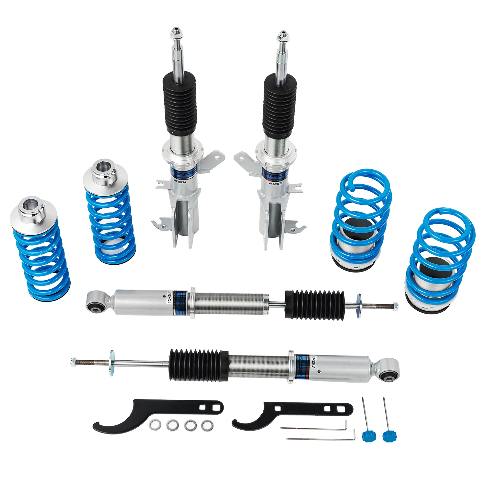

1 / 1716-stopniowe zawieszenie gwintowane Do Honda Fit/Jazz 2nd Gen GE6/GE7/GE8/GE9 2007-2014 PS002820
Pakiet zawiera Gwinty przednie x 2 szt Gwinty tylne x 2 szt Klucz x 2 szt Cechy Konstrukcja amortyzatora z pojedynczą rurką i większą pojemnością oleju/gazu Regulowana wysokość jazdy Regulowane napięcie sprężyny wstępnej Sprężyna o wysokiej wytrzymałości na rozciąganie (testowana 600 000 cykli przy zniekształceniu <0,04%) Zamontowane gumowe buty chroniące amortyzatory Lepsza obsługa bez utraty komfortu Niedroga aktu…
Package Includes Front coilovers x 2 pcs Rear coilovers x 2 pcs Wrench x 2 pcs Features Mono-tube shock design with larger oil/gas capacity Adjustable ride height Adjustable pre-load spring tension Hi-Tensile performance spring (tested 600,000 cycles with <0.04% distortion) Fitted rubber boots to protect dampers Improved handling without sacrificing comfort Affordable appearance upgrade Easy installation with proper tools Suitable for track, drift, fast road and daily driving All pictured accessories included Default 1-year warranty for any manufacturing defect, upgrade to 2 years with our Extended Warranty Program Warranty All items carry standard 1 year warranty from purchase date. Proof of purchase required. For warranty claims, please provide order number and documentation (photos/videos) of the issue. In some cases, additional information may be requested to properly diagnose problems.
1999,99 PLN
Opis produktu
Pakiet zawiera
- Gwinty przednie x 2 szt
- Gwinty tylne x 2 szt
- Klucz x 2 szt
Cechy
- Konstrukcja amortyzatora z pojedynczą rurką i większą pojemnością oleju/gazu
- Regulowana wysokość jazdy
- Regulowane napięcie sprężyny wstępnej
- Sprężyna o wysokiej wytrzymałości na rozciąganie (testowana 600 000 cykli przy zniekształceniu <0,04%)
- Zamontowane gumowe buty chroniące amortyzatory
- Lepsza obsługa bez utraty komfortu
- Niedroga aktualizacja wyglądu
- Łatwa instalacja przy użyciu odpowiednich narzędzi
- Nadaje się do toru, driftu, szybkiej jazdy i codziennej jazdy
- W zestawie wszystkie akcesoria widoczne na zdjęciu
- Standardowa roczna gwarancja na każdą wadę produkcyjną, możliwość rozszerzenia do 2 lat w ramach naszego programu rozszerzonej gwarancji
Gwarancja
Wszystkie produkty objęte są standardową roczną gwarancją od daty zakupu. Wymagany dowód zakupu. W przypadku roszczeń gwarancyjnych należy podać numer zamówienia i dokumentację (zdjęcia/filmy) problemu. W niektórych przypadkach mogą być wymagane dodatkowe informacje w celu prawidłowego zdiagnozowania problemów.
Package Includes
- Front coilovers x 2 pcs
- Rear coilovers x 2 pcs
- Wrench x 2 pcs
Features
- Mono-tube shock design with larger oil/gas capacity
- Adjustable ride height
- Adjustable pre-load spring tension
- Hi-Tensile performance spring (tested 600,000 cycles with <0.04% distortion)
- Fitted rubber boots to protect dampers
- Improved handling without sacrificing comfort
- Affordable appearance upgrade
- Easy installation with proper tools
- Suitable for track, drift, fast road and daily driving
- All pictured accessories included
- Default 1-year warranty for any manufacturing defect, upgrade to 2 years with our Extended Warranty Program
Warranty
All items carry standard 1 year warranty from purchase date. Proof of purchase required. For warranty claims, please provide order number and documentation (photos/videos) of the issue. In some cases, additional information may be requested to properly diagnose problems.
FAPO Polska
Ten produkt obsługujemy lokalnie
Autoryzowana obsługa
FAPO Polska prowadzi katalog, kontakt i zamówienia bez odsyłania klienta do zewnętrznych sklepów.
Dobór po aucie
Sprawdzamy dopasowanie produktu do pojazdu, rocznika i wersji przed finalizacją zamówienia.
Wsparcie po zakupie
Masz kontakt w Polsce w sprawach zamówień, wysyłki, gwarancji i zwrotów.